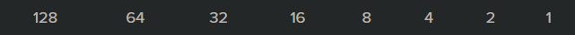
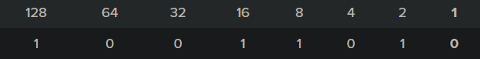
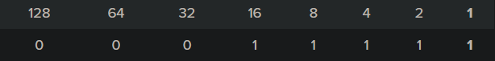
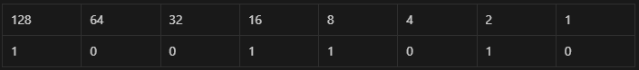
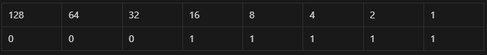

|How to convert IP address to Binary & vice versa)
- For sure you can easily use some tools like this https://codebeautify.org/ip-to-binary-converter but let’s understand how does it work.
It’s all about this table

IP to Binary
We take the IP address: 154.31.16.13 and start with the first part, which is 154.
154:
- Can I subtract 128 from 154? Answer: YES. So we assign 1 to 128. → 154 - 128 = 26
- Can I subtract 64 from 26? Answer: NO. So we assign 0 to 64.
- Can I subtract 32 from 26? Answer: NO. So we assign 0 to 32.
- Can I subtract 16 from 26? Answer: YES. So we assign 1 to 16. → 26 - 16 = 10
- Can I subtract 8 from 10? Answer: YES. So we assign 1 to 8. → 10 - 8 = 2
- subtract 4 from 2? Answer: NO. So we assign 0 to 4.
- can I subtract 2 from 2? Answer: YES. So we assign 1 to 2. → 2 - 2 = 0
- That will give us a remainder of 0. So for the rest of the values in our row, we can assign 0.

31:
- Can I subtract 128 from 31? NO, So we assign 0 to 128.
- Can I subtract 64 from 31? NO, So we assign 0 to 64.
- Can I subtract 32 from 31? NO, So we assign 0 to 32.
- Can I subtract 16 from 31? YES, So we assign 1 to 16. → 31 - 16 = 15
- Can I subtract 8 from 15? YES. So we assign 1 to 8. → 15 - 8 = 7
- Can I subtract 4 from 7? YES, So we assign 1 to 4. → 7 - 4 = 3
- Can I subtract 2 from 3? YES, So we assign 1 to 2. → 3 - 2 = 1
- Can I subtract 1 from 1? YES, So we assign 1 to 1. → 1 - 1 = 0
So the decimal number 31 is 00011111 converted to binary form. To double check: 16+8+4+2+1=31

You got the idea right?, now do the rest (16 & 13) yourself.
- would be → 10011010.00011111.00010000.00001101
Binary to IP
Just put the 1s and 0s from left to right into the table and put together the 1s.
let’s convert this 10011010.00011111.00010000.00001101 to IP.
10011010:

→ 128 + 16 + 8 + 2 = 154
00011111:

→ 16 + 8 + 4 + 2 + 1 = 31
so, do the rest by yourself.
- would be → 154.31.16.13
- Source: petri
- Wrote: December 13, 2022 | Azar 22, 1401
- Updated:
- Posted: December 13, 2022 | Azar 22, 1401